data(iris)
iris[seq(from = 1, to = nrow(iris), by = 10), 2] <- NAGestion des données manquantes
Synthèse
Le % de données manquantes n’est pas lue plus important. Il est nécessaire de comprendre les relations entre les variables. L’imputation d’un jeu de données ayant des variables fortement corrélées et un grand nombre de données manquantes sera de bonne qualité, à l’inverse de l’imputation d’un jeu de données avec peu de données manquante mais beaucoup de bruit.
L’imputation simple ne tient pas compte de la variabilité induite par les données manquantes
L’imputation multiple permet de tenir compte de cette variabilité et permet de mesurer précisément la variabilité des prédictions.
Identification des valeurs manquantes
Les fonctions de base :
isna <- is.na(iris) # Donne un vecteur de booléens
anyNA(iris) # Oui / Non au moins une valeur manquante est présente[1] TRUEsummary(iris) # Montre les valeurs manquantes Sepal.Length Sepal.Width Petal.Length Petal.Width
Min. :4.300 Min. :2.200 Min. :1.000 Min. :0.100
1st Qu.:5.100 1st Qu.:2.800 1st Qu.:1.600 1st Qu.:0.300
Median :5.800 Median :3.000 Median :4.350 Median :1.300
Mean :5.843 Mean :3.055 Mean :3.758 Mean :1.199
3rd Qu.:6.400 3rd Qu.:3.300 3rd Qu.:5.100 3rd Qu.:1.800
Max. :7.900 Max. :4.400 Max. :6.900 Max. :2.500
NA's :15
Species
setosa :50
versicolor:50
virginica :50
Ces fonctions permettent de manipuler facilement les données manquantes :
iris2 <- iris[-which(is.na(iris$Sepal.Width)),]
anyNA(iris2)[1] FALSEdim(iris2)[1] 135 5Pour supprimer l’ensemble des valeurs manquantes, on peut aussi utiliser la fonction na.omit.
iris3 <- na.omit(iris)
dim(iris3)[1] 135 5Dans le tidyverse, d’autres fonctions sont disponibles :
iris4 <- iris %>%
drop_na()
dim(iris4)[1] 135 5iris5 <- iris %>%
fill(Sepal.Width, .direction = "up") # remplace les valeurs manquantes avec la valeur du dessous
anyNA(iris5)[1] FALSEiris6 <- iris %>%
replace_na(list(Sepal.Width = 10)) # attention, il faut une liste de valeursVisualisation des données manquantes
L’objectif est de répondre aux questions suivantes :
Quelle est la proportion de données manquantes ?
Quel est le type de données manquantes ?
Existe-t-il une dépendance dans les données manquantes ?
Les données manquantes relèvent de plusieurs types :
MCAR - Missing completely at random. La probabilité qu’une observation soit manquante ne dépend pas des mesures observées ou non observées.
MAR - Missing at random. La probabilité qu’une observation soit manquante dépend uniquement des données observées (ex : dans un questionnaire, la probabilité que la donnée sur le poids soit manquante dépend du sexe).
MNAR - Mission not at random. La probabilité qu’une observation soit manquante dépend des données non observées et n’est pas aléatoire (ex : les personnes en sur-poids ne donnent pas leurs poids : les valeurs extrêmes sont absentes).
Les packages naniar et VIM aident à visualiser les données manquantes.
iris_NA <- iris
iris_NA[seq(from = 1, to = nrow(iris), by = 3), 4] <- NA
iris_NA[seq(from = 1, to = nrow(iris), by = 6), 3] <- NA
iris_NA[seq(from = 1, to = nrow(iris), by = 25), 5] <- NA
summary(iris_NA) Sepal.Length Sepal.Width Petal.Length Petal.Width
Min. :4.300 Min. :2.200 Min. :1.000 Min. :0.100
1st Qu.:5.100 1st Qu.:2.800 1st Qu.:1.600 1st Qu.:0.300
Median :5.800 Median :3.000 Median :4.300 Median :1.300
Mean :5.843 Mean :3.055 Mean :3.774 Mean :1.209
3rd Qu.:6.400 3rd Qu.:3.300 3rd Qu.:5.100 3rd Qu.:1.800
Max. :7.900 Max. :4.400 Max. :6.900 Max. :2.500
NA's :15 NA's :25 NA's :50
Species
setosa :48
versicolor:48
virginica :48
NA's : 6
Le package naniar facilite l’identification des valeurs manquantes :
naniar::pct_miss(iris_NA) # pct de données manquantes[1] 12.8naniar::n_miss(iris_NA) # nb de données manquantes[1] 96naniar::n_complete(iris_NA) # nb de données complètes[1] 654naniar::pct_complete(iris_NA) # pct de données complètes[1] 87.2Informations sur les variables
naniar::miss_var_summary(iris_NA) # détail des informations en fonction des variables# A tibble: 5 × 3
variable n_miss pct_miss
<chr> <int> <dbl>
1 Petal.Width 50 33.3
2 Petal.Length 25 16.7
3 Sepal.Width 15 10
4 Species 6 4
5 Sepal.Length 0 0 naniar::gg_miss_var(iris_NA, show_pct = TRUE) + ylim(0, 100)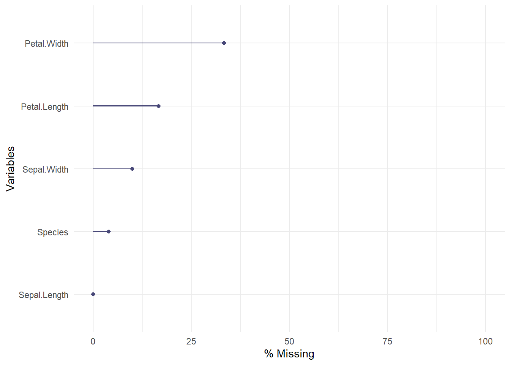
Informations sur les individus
naniar::miss_case_summary(iris_NA)# A tibble: 150 × 3
case n_miss pct_miss
<int> <int> <dbl>
1 1 4 80
2 31 3 60
3 61 3 60
4 91 3 60
5 121 3 60
6 7 2 40
7 13 2 40
8 19 2 40
9 25 2 40
10 37 2 40
# ℹ 140 more rowsnaniar::gg_miss_case(iris_NA)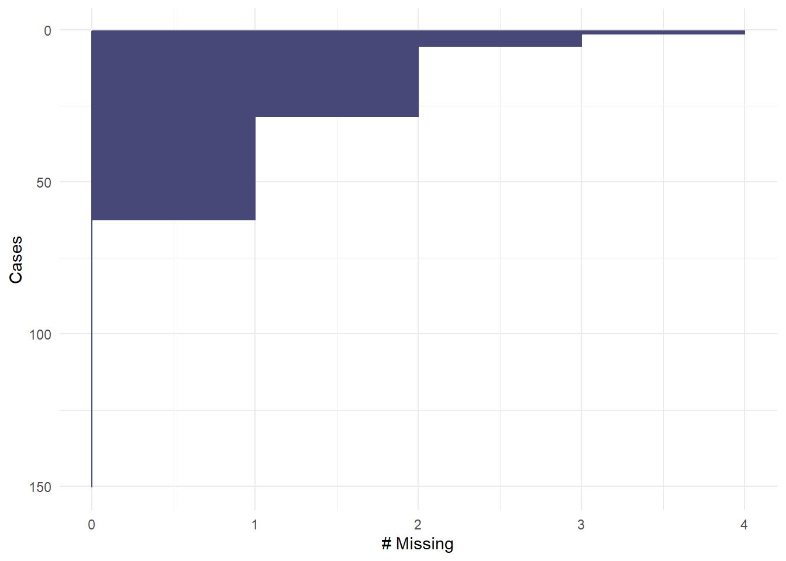
naniar::prop_miss_row(iris_NA) [1] 0.8 0.0 0.0 0.2 0.0 0.0 0.4 0.0 0.0 0.2 0.2 0.0 0.4 0.0 0.0 0.2 0.0 0.0
[19] 0.4 0.0 0.2 0.2 0.0 0.0 0.4 0.2 0.0 0.2 0.0 0.0 0.6 0.0 0.0 0.2 0.0 0.0
[37] 0.4 0.0 0.0 0.2 0.2 0.0 0.4 0.0 0.0 0.2 0.0 0.0 0.4 0.0 0.4 0.2 0.0 0.0
[55] 0.4 0.0 0.0 0.2 0.0 0.0 0.6 0.0 0.0 0.2 0.0 0.0 0.4 0.0 0.0 0.2 0.2 0.0
[73] 0.4 0.0 0.0 0.4 0.0 0.0 0.4 0.0 0.2 0.2 0.0 0.0 0.4 0.0 0.0 0.2 0.0 0.0
[91] 0.6 0.0 0.0 0.2 0.0 0.0 0.4 0.0 0.0 0.2 0.4 0.0 0.4 0.0 0.0 0.2 0.0 0.0
[109] 0.4 0.0 0.2 0.2 0.0 0.0 0.4 0.0 0.0 0.2 0.0 0.0 0.6 0.0 0.0 0.2 0.0 0.2
[127] 0.4 0.0 0.0 0.2 0.2 0.0 0.4 0.0 0.0 0.2 0.0 0.0 0.4 0.0 0.2 0.2 0.0 0.0
[145] 0.4 0.0 0.0 0.2 0.0 0.0naniar::vis_miss(iris_NA)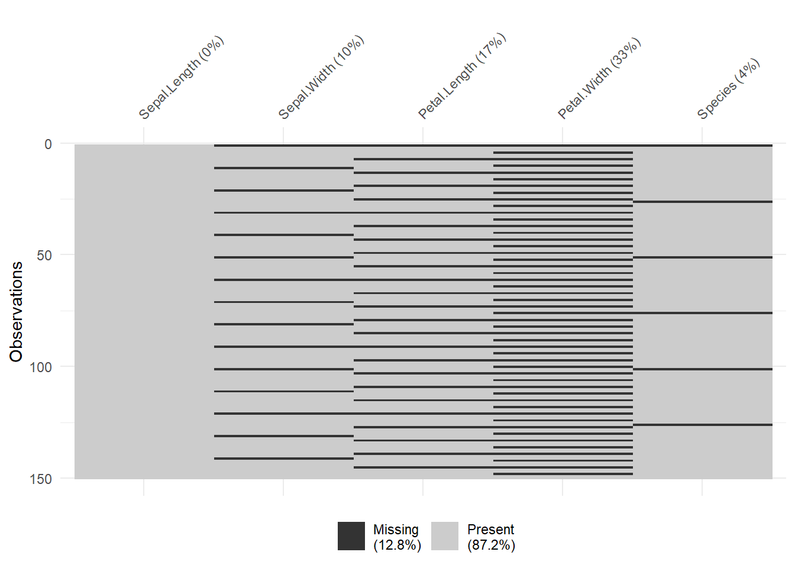
naniar::vis_miss(iris_NA, cluster = TRUE) # On peut regrouper les données pour essayer de trouver les relations entre les données manquantes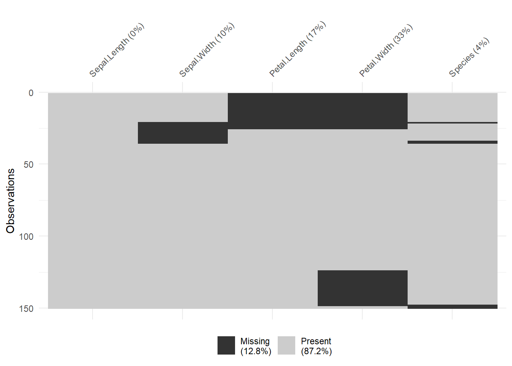
Le package VIM offre d’autres solutions de visualisation :
VIM::aggr(iris_NA, sortVAR = TRUE)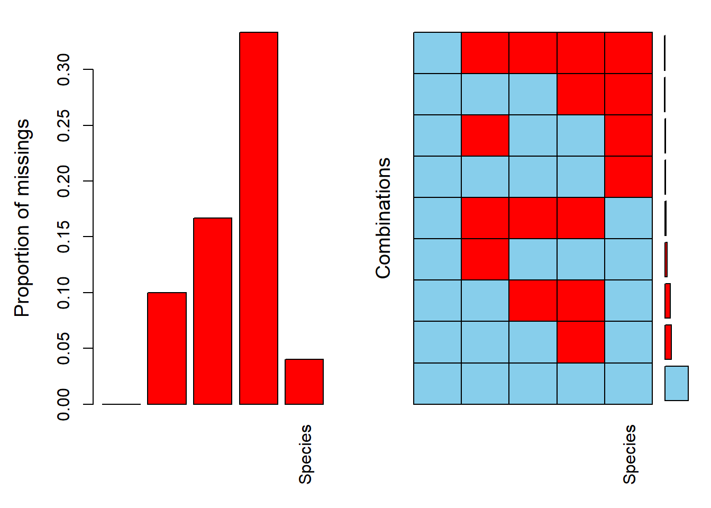
iris_NA %>%
select(Sepal.Length, Petal.Width) %>%
VIM::marginplot()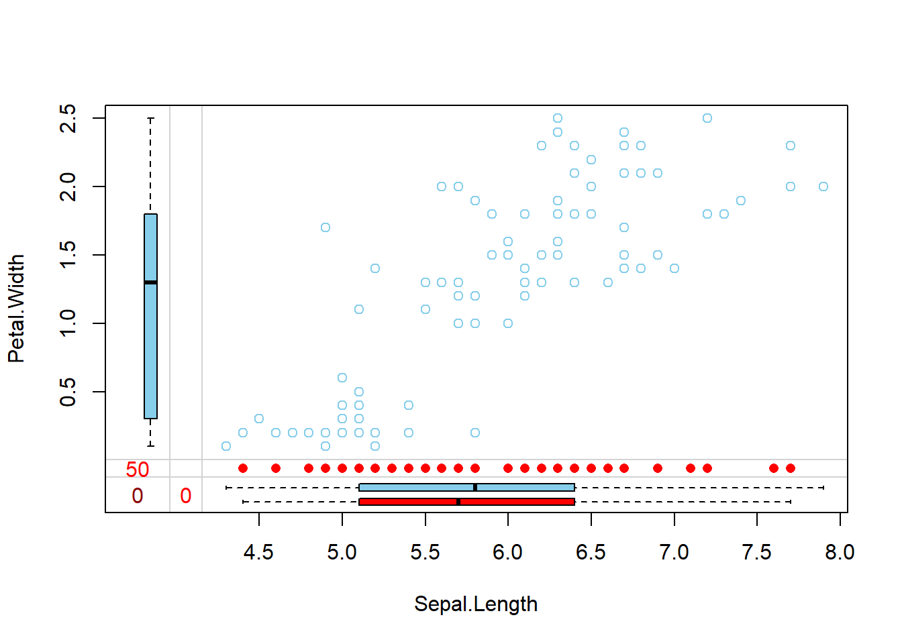
La visualisation et l’analyse des données manquantes peut aussi être réalisée en mobilisant une ACM :
data_miss <- data.frame(is.na(iris_NA))
data_miss <- apply(X=data_miss, FUN=function(x) if(x) "m" else "o", MARGIN=c(1,2))
res.mca <- FactoMineR::MCA(data_miss, graph = F)
plot(res.mca, invis = "ind", title = "graphe des modalités", cex = 0.5)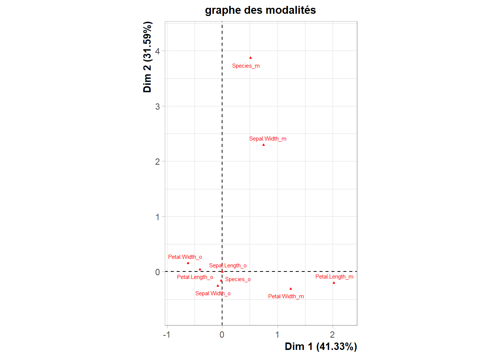
Imputer les valeurs manquantes
La suppression des données manquantes est envisageable si le nombre d’observations complètes est suffisant (reste à définir un seuil acceptable…).
L’imputation consiste à compléter le jeu de données :
Imputation simple : prévoir les valeurs manquantes pour une analyse exploratoire.
Imputation multiple : faire de l’inférence.
Imputation simple
L’imputation peut être réalisée en remplaçant les valeurs manquantes par la moyenne des valeurs observées de la variable.
iris_NA %>%
mutate(new_Sepal.Width = replace_na(Sepal.Width, mean(Sepal.Width, na.rm = TRUE))) %>%
select(Sepal.Width, new_Sepal.Width) %>%
summary() Sepal.Width new_Sepal.Width
Min. :2.200 Min. :2.200
1st Qu.:2.800 1st Qu.:2.800
Median :3.000 Median :3.000
Mean :3.055 Mean :3.055
3rd Qu.:3.300 3rd Qu.:3.275
Max. :4.400 Max. :4.400
NA's :15 Cette méthode entraîne néanmoins une déformation de la distribution des valeurs., Une autre méthode consiste à imputer en réalisant une ACP :
nb <- missMDA::estim_ncpPCA(iris_NA[,1:4],ncp.max=5) # estimation du nb de composantes
dat.comp <- missMDA::imputePCA(iris_NA[,1:4],ncp=nb$ncp) # imputation du jeu de données
head(dat.comp$completeObs) Sepal.Length Sepal.Width Petal.Length Petal.Width
[1,] 5.1 3.109677 2.30904 0.6069165
[2,] 4.9 3.000000 1.40000 0.2000000
[3,] 4.7 3.200000 1.30000 0.2000000
[4,] 4.6 3.100000 1.50000 0.2514280
[5,] 5.0 3.600000 1.40000 0.2000000
[6,] 5.4 3.900000 1.70000 0.4000000La fonction imputeMCA permet de faire l’imputation avec des données qualitatives et imputeFAMD avec des données mixtes.
nb2 <- missMDA::estim_ncpFAMD(iris_NA, ncp.max=5, verbose = FALSE) # estimation du nb de composantes
dat.comp2 <- missMDA::imputeFAMD(iris_NA,ncp=nb2$ncp) # imputation du jeu de données
head(dat.comp2$completeObs) Sepal.Length Sepal.Width Petal.Length Petal.Width Species
1 5.1 3.091835 2.382436 0.6625403 setosa
2 4.9 3.000000 1.400000 0.2000000 setosa
3 4.7 3.200000 1.300000 0.2000000 setosa
4 4.6 3.100000 1.500000 0.2041850 setosa
5 5.0 3.600000 1.400000 0.2000000 setosa
6 5.4 3.900000 1.700000 0.4000000 setosasummary(dat.comp2$completeObs) Sepal.Length Sepal.Width Petal.Length Petal.Width
Min. :4.300 Min. :2.200 Min. :1.000 Min. :0.1000
1st Qu.:5.100 1st Qu.:2.800 1st Qu.:1.600 1st Qu.:0.3284
Median :5.800 Median :3.000 Median :4.200 Median :1.3000
Mean :5.843 Mean :3.060 Mean :3.747 Mean :1.1969
3rd Qu.:6.400 3rd Qu.:3.356 3rd Qu.:5.100 3rd Qu.:1.8590
Max. :7.900 Max. :4.400 Max. :6.900 Max. :2.5000
Species
setosa :50
versicolor:49
virginica :51
L’imputation peut également être réalisée par imputation aléatoire :
iris_missforest <- missForest::missForest(iris_NA)
summary(iris_missforest$ximp) Sepal.Length Sepal.Width Petal.Length Petal.Width
Min. :4.300 Min. :2.200 Min. :1.000 Min. :0.100
1st Qu.:5.100 1st Qu.:2.800 1st Qu.:1.600 1st Qu.:0.300
Median :5.800 Median :3.000 Median :4.200 Median :1.300
Mean :5.843 Mean :3.054 Mean :3.756 Mean :1.199
3rd Qu.:6.400 3rd Qu.:3.300 3rd Qu.:5.100 3rd Qu.:1.800
Max. :7.900 Max. :4.400 Max. :6.900 Max. :2.500
Species
setosa :49
versicolor:51
virginica :50
Imputation multiple
L’objectif est de générer plusieurs tableaux de données imputés pour réfleter la variance de prédiction des valeurs manquantes.
res.mipca <- missMDA::MIPCA(iris_NA[1:4], scale = TRUE, ncp = nb$ncp, nboot = 100)
plot(res.mipca)
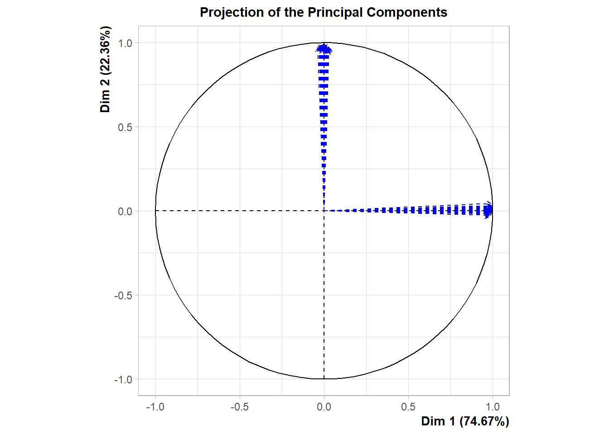

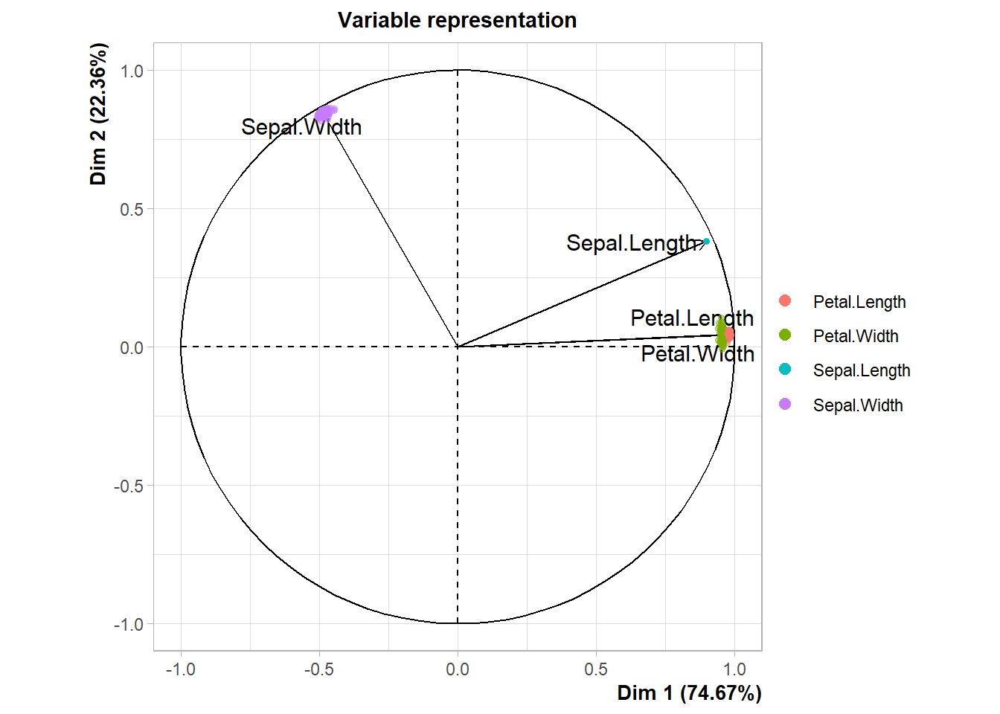
$PlotIndProc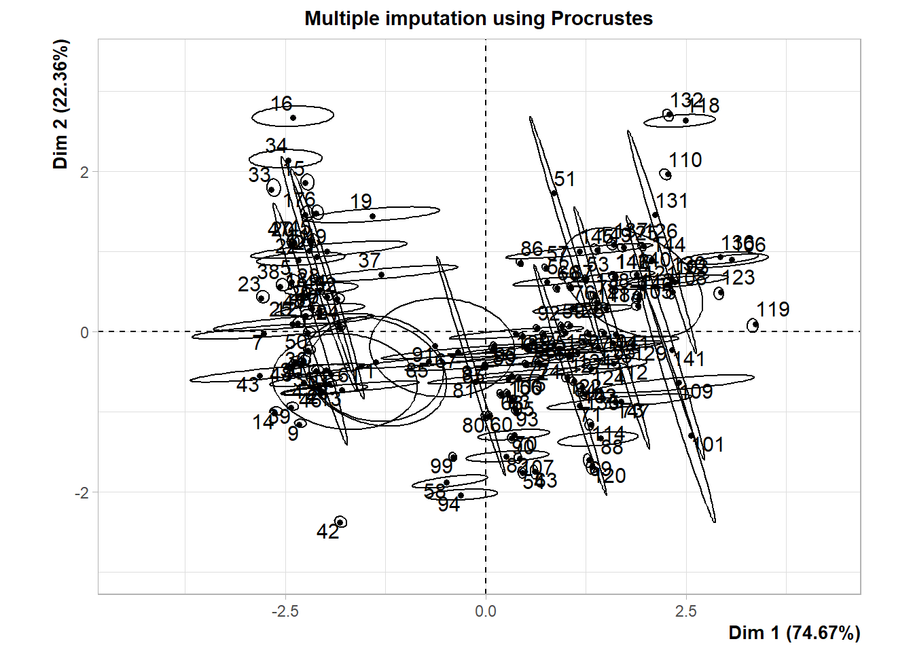
$PlotDim
$PlotIndSupp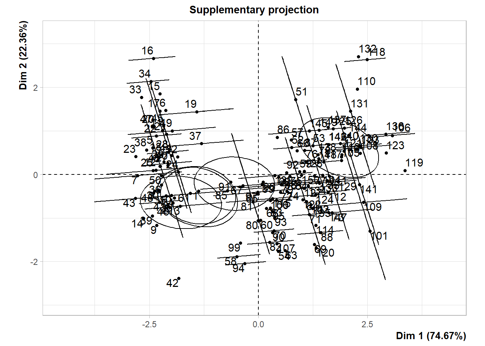
$PlotVar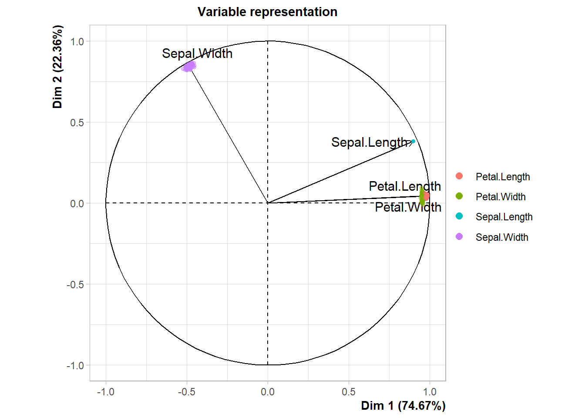
Le schéma bleu permet de voir si le % de données manquantes impacte la qualité de l’imputation.
La taille des ellipses et la dispersion des points des variables permettent de savoir si on peut poursuivre l’analyse des tableaux imputés.
On peut utiliser l’imputation mutlple avec hypothèse de distribution jointe gausienne :
dat.amelia <- Amelia::amelia(iris_NA[1:4], m=100, p2s = 0)
Amelia::compare.density(dat.amelia,var="Petal.Length")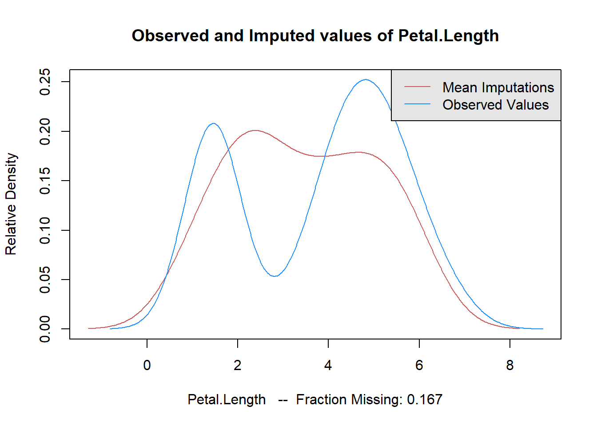
On peut aussi utiliser la méthode d’imputation multiple selon le modèle conditionnel :
mice_mice <- mice::mice(iris_NA, m=5, method="pmm", printFlag = FALSE)
head(mice::complete(mice_mice,1), 5) # pour visualiser le 1er taleau généré Sepal.Length Sepal.Width Petal.Length Petal.Width Species
1 5.1 2.5 5.1 2.3 virginica
2 4.9 3.0 1.4 0.2 setosa
3 4.7 3.2 1.3 0.2 setosa
4 4.6 3.1 1.5 0.2 setosa
5 5.0 3.6 1.4 0.2 setosamice_mice$meth # permet de visualiser les méthodes utiliséesSepal.Length Sepal.Width Petal.Length Petal.Width Species
"" "pmm" "pmm" "pmm" "pmm"